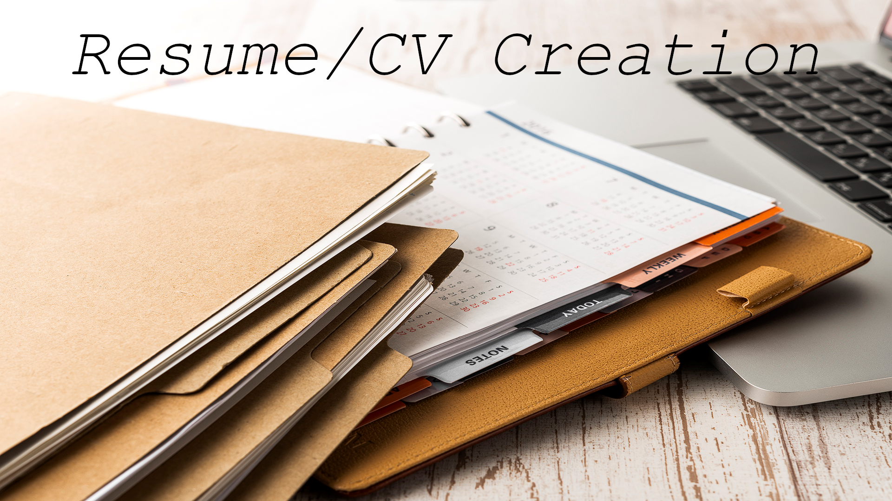

Hey. I'm a paragraph element. Cool huh?
We have come to the besluit that the best youtuber ever is
....

I'm gRim's biggest fan!!!!
g Title: "Professional Resume Writing Services" Description: Unlock the potential of your career with my top-notch resume writing services. I specialize in crafting resumes that not only showcase your qualifications but also tell your unique professional story. Whether you're seeking your first job, making a career change, or aiming for a promotion, I'm here to help you stand out in a competitive job market. What I Offer: Customized Resumes: Every resume I create is tailored to your specific career goals, industry, and job type. I highlight your skills, accomplishments, and qualifications in a way that resonates with employers. ATS-Friendly Resumes: I understand the importance of Applicant Tracking Systems (ATS) in the modern hiring process. Your resume will be optimized to ensure it passes ATS screenings, increasing your chances of getting noticed by employers. Cover Letter Writing: Complement your resume with a professionally written cover letter. A well-crafted cover letter not only introduces you but also demonstrates your genuine interest in the position. LinkedIn Profile Optimization: In today's digital age, your online presence matters. I'll optimize your LinkedIn profile, making it a powerful tool for networking and job hunting. Interview Preparation: Prepare for interviews with confidence. I provide tailored interview tips, techniques, and guidance to help you impress potential employers. Keyword Optimization: I use industry-specific keywords to enhance the visibility of your resume, ensuring it aligns with the expectations of hiring managers. Modern Resume Formats: Stay up-to-date with the latest resume trends and formats. I create modern, visually appealing resumes that grab attention. Career Consultation: Need career advice? I'm here to discuss your goals, aspirations, and how to navigate your career path successfully. Invest in your future today. Let's collaborate to create a resume that not only opens doors to exciting career opportunities but also re
